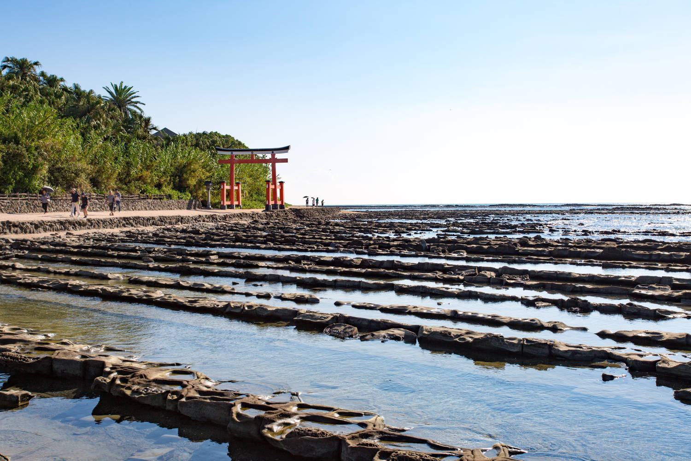
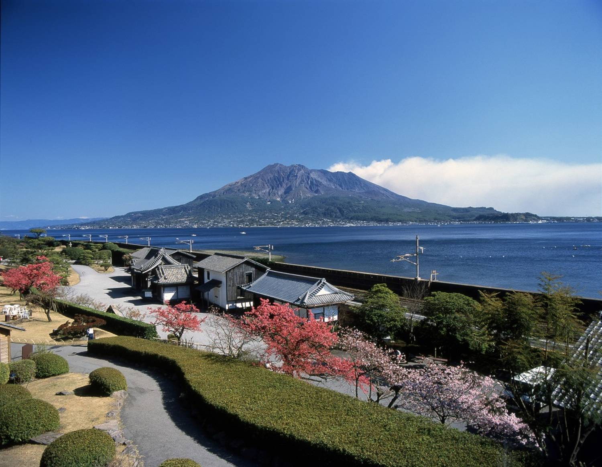
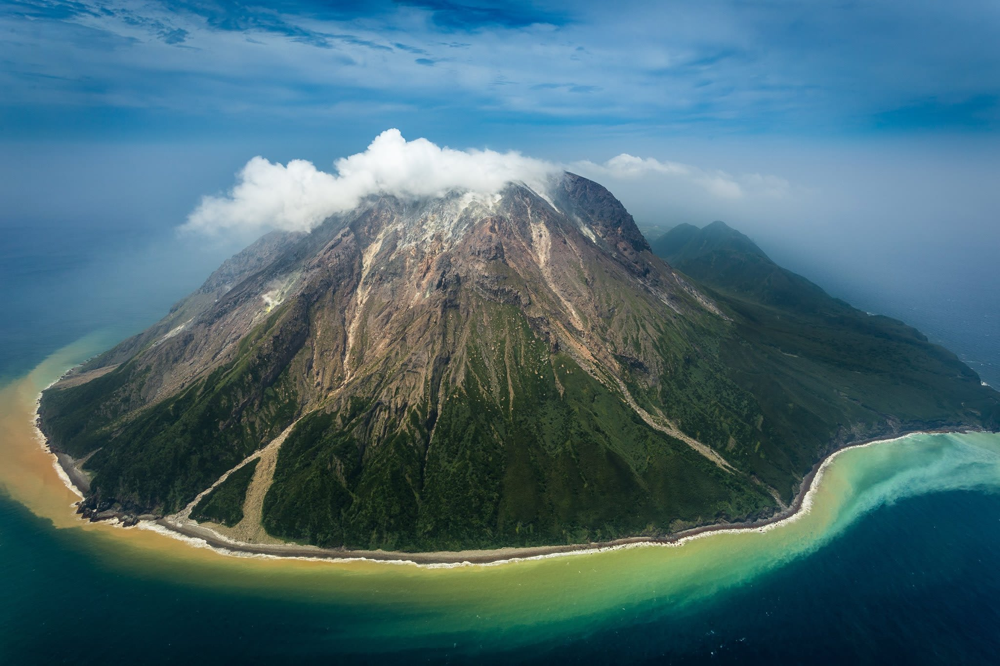

As seen from the existence of Dazaifu (the former imperial office governing Kyushu area) and Korokan (a former guest house for foreign embassies), Fukuoka Prefecture has long served as a gateway to the Chinese continent and the Korean peninsula. In its various areas, the prefecture still features famous sights with historic and cultural attractions. (Source: Official Site)
Prefecture Image
Devil's Washboard
Sengan-en Landscape
Ioujima: Sulfur Island
